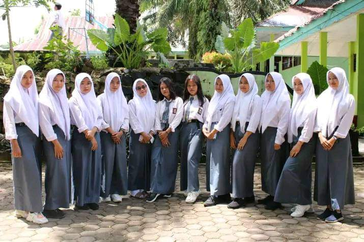

Selamat Datang di SMK Negeri 4 Kota Bengkulu
Sekolah Menengah Kejuruan unggulan di kota Bengkulu, berfokus pada pendidikan vokasi berbasis teknologi dan karakter.
Tentang Kami
SMK Negeri 4 Kota Bengkulu adalah lembaga pendidikan kejuruan yang menyediakan berbagai program studi, seperti RPL, TKJ, TKR, TBSM, dan lainnya. Visi kami adalah menciptakan lulusan yang kompeten dan siap bersaing di dunia kerja maupun melanjutkan pendidikan.
Kontak Kami
Alamat: Jl. Zainul Arifin, Kota Bengkulu
Email: smkn4bkl@example.sch.id
Telepon: (0736) 123456
Galeri



Berita Terbaru
- 17 April 2025: SMKN 4 Bengkulu Juara LKS Tingkat Provinsi.
- 10 April 2025: Kunjungan Industri Siswa ke PT Telkom Indonesia.
- 5 April 2025: Pelatihan Softskill dan Public Speaking.